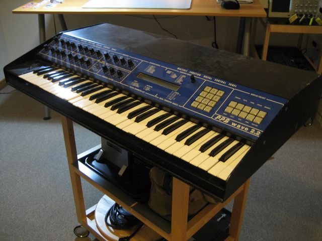

Scheda 030 · 1982 · Amburgo
PPG Wave 2.2
Oscillatori digitali dentro, filtri analogici fuori: nessuno l'aveva ancora fatto
Trenta tabelle da sessantaquattro onde l'una, e una manopola che ci cammina dentro.
- ANNO
- 1982
- ORIGINE
- Germania
- OSCILLATORI
- Digitali, 8 bit
- FILTRI
- Analogici, 24 dB
La macchinaChe cos'è
Otto voci, sedici oscillatori digitali a 8 bit, e in memoria trenta «tavole d'onda»: ognuna è una fila di 64 forme d'onda diverse, messe in ordine come i fotogrammi di un film. Il suono non sta in una forma sola, sta nel percorso che si fa attraverso la fila. Poi tutto esce da filtri passa-basso analogici da 24 dB per ottava, gli stessi che avrebbe un sintetizzatore tradizionale.
Chi l'ha costruitaWolfgang Palm
Palm fonda la PPG ad Amburgo nel 1975 e la chiude nel 1987, indebitato per una macchina che non fece in tempo a vendere. In mezzo ci sono dodici anni in cui inventa la sintesi a tavole d'onda, che oggi trovate dentro un sacco di synth digitali, quasi sempre senza il suo nome accanto.
Come funzionaCosa c'è dentro
Prendi 64 onde leggermente diverse e mettile in fila. Se ne suoni una sola hai un timbro fermo; se una manopola o un inviluppo cammina lungo la fila, il timbro cambia mentre la nota suona, e cambia in modi che nessun filtro può imitare — perché non sta togliendo armoniche, sta sostituendo l'onda. A 8 bit i numeri sono pochi e si sente: ogni onda porta con sé una grana metallica.
Chi l'ha usataNei dischi
- David BowieFra i primi a portarlo su un disco grande
- Depeche ModeIl timbro che si muove mentre la nota resta ferma
- Thomas DolbyFra i primi a usarlo, nei primi anni Ottanta
- Tangerine DreamTavole d'onda al posto delle sequenze analogiche
L'aneddotoUna storia
Gli 8 bit non erano una scelta estetica: erano quello che si poteva permettere nel 1982. Quella povertà di numeri lascia un residuo ruvido su ogni suono, e per anni i costruttori hanno inseguito più bit per toglierlo. Oggi chi cerca «il suono PPG» cerca esattamente quel residuo, e i sintetizzatori moderni lo rimettono dentro apposta.
Avvertenze
La grana metallica non si toglie: sono gli 8 bit degli oscillatori. Non è un difetto da correggere, è la voce.
Il carosello
Le 6 tavole
Da dove viene
Fonti
- «PPG Wave» — Wikipedia (EN) verificata il 2026-09-10
- «PPG Wave 2» — Vintage Synth Explorer verificata il 2026-09-10
- «Palm Products GmbH» — Wikipedia (EN) verificata il 2026-09-10
Foto: John R. Southern · CC BY-SA 2.0 · Wikimedia Commons